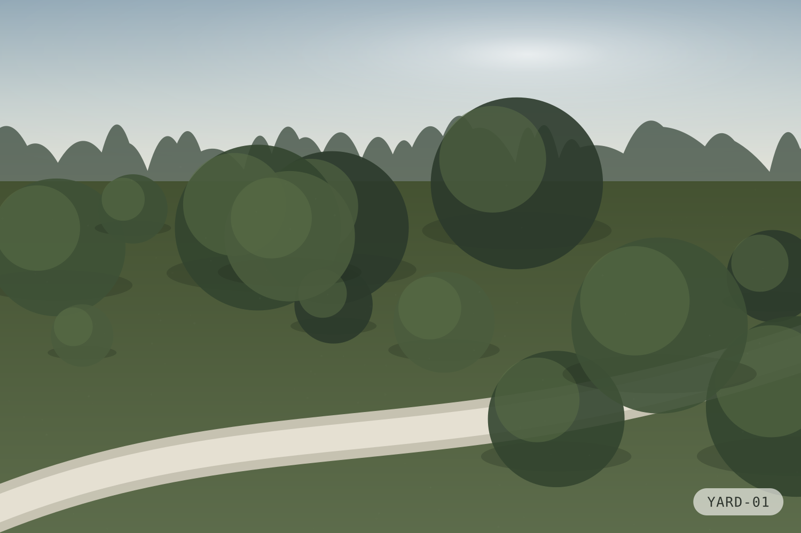
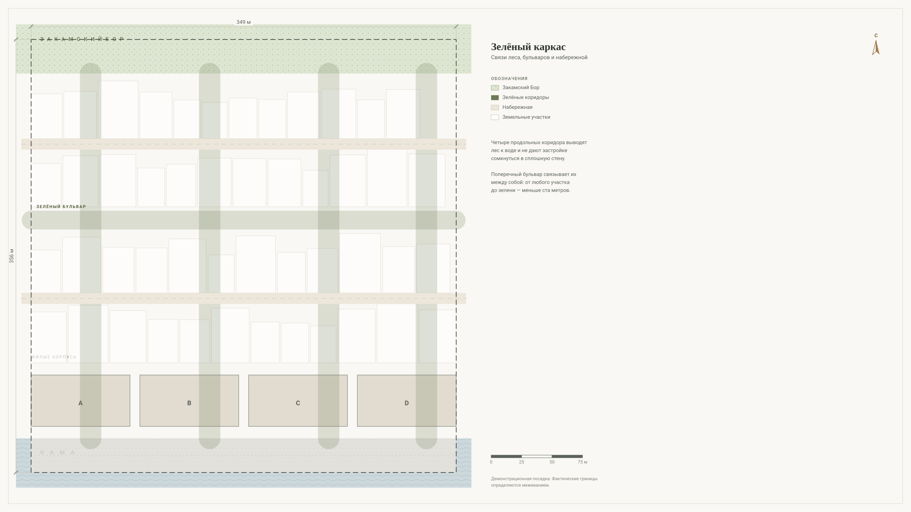
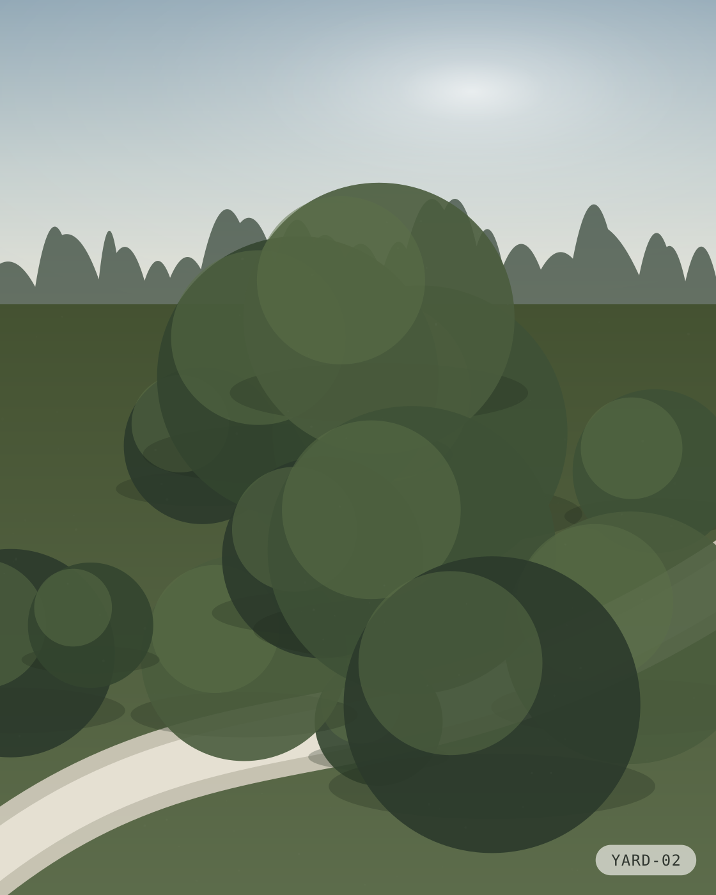
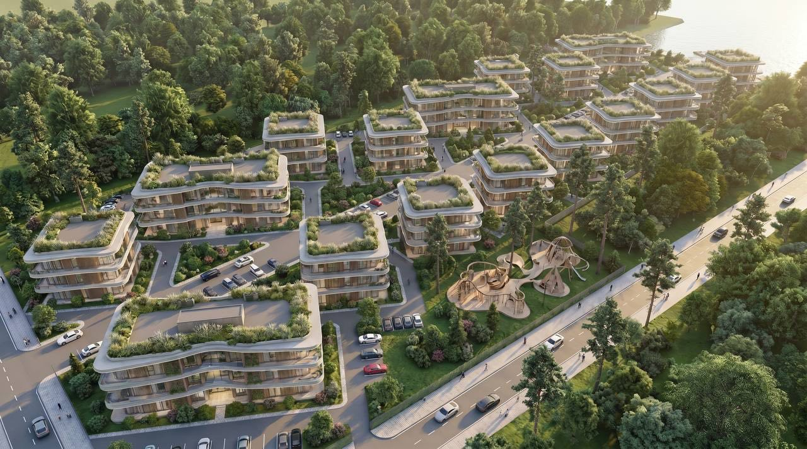
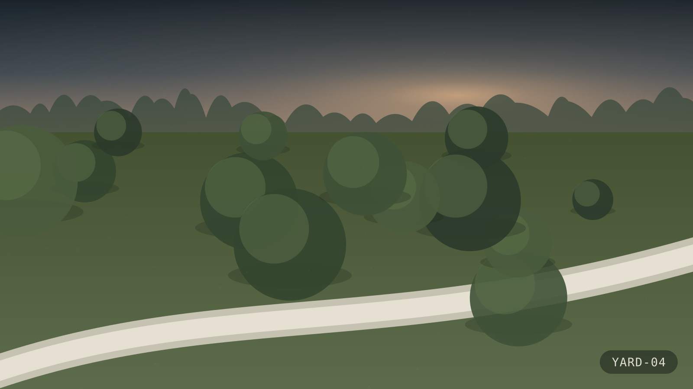
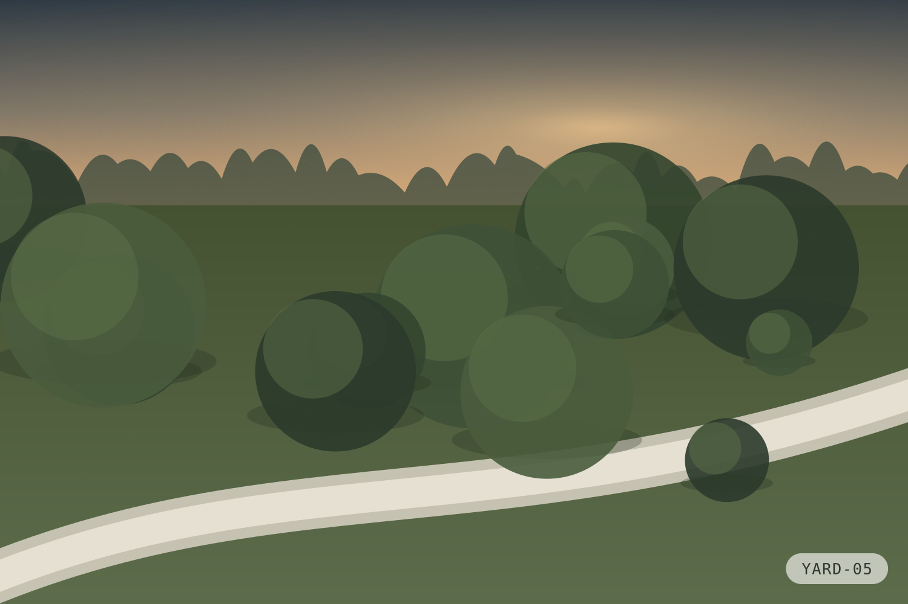
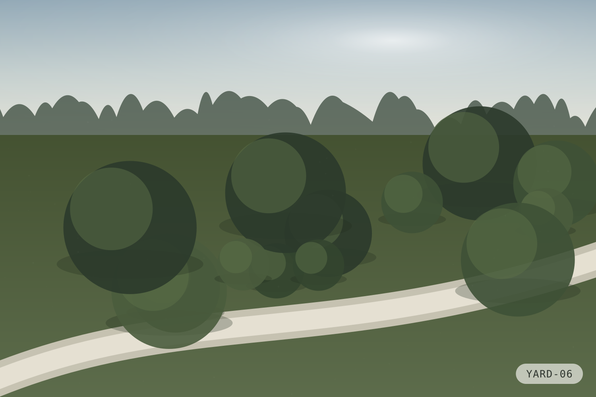
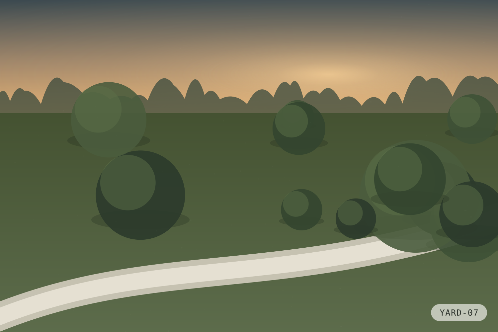
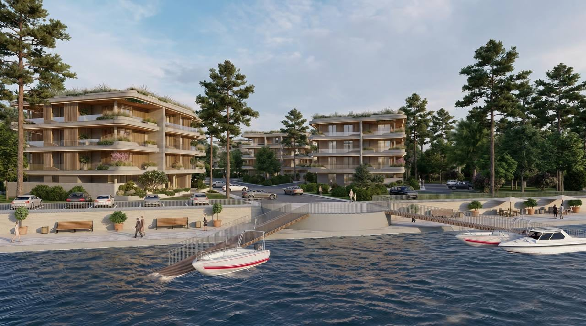

Благоустройство
Территория устроена по одному правилу: машина остаётся на периметре, человек идёт внутри. Отсюда — приватные дворы и непрерывные пешеходные связи от леса к воде.


Зелёные коридоры
Лес заходит на территорию
Три коридора трассированы по существующим просекам — так удаётся сохранить максимум взрослых сосен вместо того, чтобы высаживать новые.
Каждый коридор проходит в разрыве между корпусами и не пересекается с проездами. Пешеход от кромки бора доходит до набережной, ни разу не переходя дорогу.
Дворы
Двор, в который нельзя въехать
Гостевые парковки, въезды в подземный паркинг и разгрузка коммерции вынесены на периметр территории. Внутри двора остаются только пешеходные и велосипедные связи.

Связь с водой
Дорожки выводят на набережную без пересечения с транспортом.

Детские зоны
Размещены в тени существующих деревьев, вдали от проездов.

Освещение
Свет по нижнему ярусу — дорожки читаются, окна не засвечиваются.
Архитектурная визуализация. Не является отображением фактически построенного объекта.
Сценарии
Территория в течение дня

Утро
Основной поток идёт от корпусов к периметру: паркинг, остановки, выезды. Коридоры работают в обратную сторону — на пробежку к набережной.

День
Двор пустеет и работает как тихая зона. Активность смещается на первые этажи: сервисы, пункты выдачи, коммерция.

Вечер
Включается нижний ярус освещения. Детские и спортивные зоны работают до отбоя, дальше остаётся только навигационный свет вдоль дорожек.
Архитектурная визуализация. Не является отображением фактически построенного объекта.
Набережная
Выход к воде
Прибрежная полоса остаётся свободной от капитальной застройки. Благоустройство набережной — предмет отдельного согласования и публикуется по утверждённым материалам.

Посмотреть территорию вживую
Покажем границы участка, кромку бора и выход к воде.